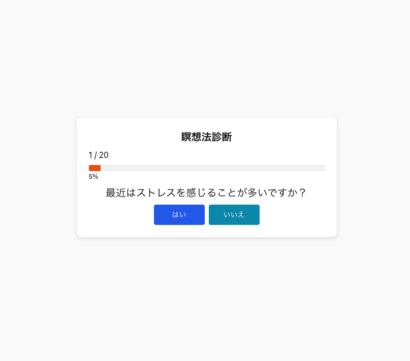

20個の質問に答えることで、ユーザに適した瞑想法を提案するアプリです。複数ある瞑想法の中から目的や状態に応じた最適な瞑想法、その手順、効能などを提示します。
使用技術
・TypeScript
・React
・Chakra UI
・Vercel
URL
https://meditation-guide.vercel.app/
リポジトリ
https://github.com/simazo/meditation-guide
背景
Reactのキャッチアップを兼ねて、小さいながらも何か役立つものを作りたくて実装。
個人的にたまに瞑想していたため。
瞑想には多様な手法が存在し、それぞれ効果や目的が異なります。しかし初心者にとっては、どの瞑想を選べばよいか分かりづらく、導入のハードルとなっています。本アプリは、瞑想をこれから始めたい方の第一歩、あるいはヒントとなれば、という目的で開発しました。
サービスの目的
ユーザーが自分に合った瞑想法を理解・選択できるようにし、瞑想の実践に対する心理的ハードルを下げる。
ターゲット
瞑想を始めたいが、どの方法が自分に合うのか分からない初心者、複数の瞑想法に興味があり、自分の状態や課題に応じて使い分けたい人
機能
・簡単な診断テスト（複数選択式）により、適した瞑想法を判定
・判定結果には、瞑想法の名称だけでなく「目的」「主な効果」「方法」などの詳細情報も表示
・複数の瞑想法が適している場合は、適している順に表示
苦労した点
瞑想法を「どうやって判定するか」が最も悩んだ部分でした。重みづけ方式、スコア計算式、条件分岐によるマッチングなど、複数のロジックを検討しましたが、それぞれに複雑さや説明性の課題がありました。
工夫した点
最終的には、「タグによる集計法」というシンプルかつ柔軟な判定ロジックを採用しました。各質問と選択肢にあらかじめ瞑想法ごとの関連タグを付け、選択された回答からタグを集計し、スコアの高い瞑想法を提示する形式です。これにより、診断ロジックの可視性・保守性を確保しつつ、ある程度の精度も保てるバランス設計にすることができました。